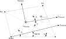

Quad4R - Quadrilateral element with reduced integration (pyfe3d.quad4r)#
The module has three classes: Quad4RData, with the sizes of the
sparse arrays that one element fills; Quad4RProbe, with the
buffers in element coordinates that one or more elements share; and
Quad4R, the element. The update_* methods of Quad4R
write the element contributions in sparse row, column and value arrays, from
the positions given by its init_k_* attributes, or add them to a global
internal force vector.
The Quad4R element has 6 degrees-of-freedom (DOF): \(u\), \(v\), \(w\),
\(r_x\), \(r_y\), \(r_z\). All DOF are interpolated bi-linearly between the nodes.
All stiffness terms, besides drilling, are integrated using the reduced
integration scheme for the Quad4R element, with a single point at
the centroid, making it very efficient concerning the time needed to
calculate the internal forces and stiffness matrices, in comparison with the
Quad4 element. The hourglass modes of the bending and of the
transverse shear, of \(w\), \(r_x\) and \(r_y\), are controlled by the physical
stabilisation of Belytschko and Leviathan (1994), which has no parameter,
and those of the membrane, of \(u\) and \(v\), by the artificial stiffness of
Brockman (1987); hgfactor_physical and hgfactor_membrane of
Quad4R.update_KC0(), Quad4R.update_probe_finte() and
Quad4R.update_fint() multiply them.
The drilling rotation \(r_z\) is tied to the in-plane rotation of the membrane
field by a term integrated with two points per direction, whose coefficient
is selected with the drilling_model attribute of Quad4R: the
default 0 is physics-based, any other value gives the fictitious penalty
of MSC Nastran and Autodesk Nastran controlled by the K6ROT attribute.
Unlike Quad4 and Tria3R, this element does
not enrich the in-plane displacement field with the drilling rotations.
Use Quad4 to use Allman’s enrichment.
The transverse shear stiffnesses \(A_{44}\), \(A_{45}\) and \(A_{55}\) are read
from the pyfe3d.shellprop.ShellProp object with the shear correction
already applied, see pyfe3d.shellprop.ShellProp.calc_transverse_shear_stiffness(),
and no shear correction factor is applied by the element. When a material
direction is defined, they are brought to the element coordinate system with
pyfe3d.shellprop.ShellProp.calc_Ats_element().
Notes#
The element follows the first-order shear deformation theory (FSDT). The displacements at a distance \(z\) from the reference surface are \(u + z r_y\), \(v - z r_x\) and \(w\), which gives, in the element coordinate system, the membrane strains, the curvatures and the transverse shear strains
and the strain energy
with \(\boldsymbol{\epsilon} = \{\epsilon_{xx}, \epsilon_{yy}, \gamma_{xy}\}^\top\), \(\boldsymbol{\kappa} = \{\kappa_{xx}, \kappa_{yy}, \kappa_{xy}\}^\top\), \(\boldsymbol{\gamma} = \{\gamma_{yz}, \gamma_{xz}\}^\top\), \(\boldsymbol{A}\), \(\boldsymbol{B}\) and \(\boldsymbol{D}\) the laminate stiffness matrices and \(\boldsymbol{A}_s\) the matrix of \(A_{44}\), \(A_{45}\) and \(A_{55}\), all in the element coordinate system, \(U_{r_z}\) the drilling term and \(U_{hg}\) the hourglass term described below. All DOF are interpolated bi-linearly between the nodes, such that any of the DOF gradients can be constant over the element when the element is rectangular.
Integration scheme and hourglass control
In the reduced integration scheme used, a single point at the centroid (\(\xi=\eta=0\)) and weight \(w_{ij}=4\), the membrane, bending and transverse shear terms leave hourglass modes without stiffness. Those of the bending and of the transverse shear are controlled with the physical stabilisation of Belytschko and Leviathan (1994) [9], described below, and those of the membrane with the artificial stiffness of Brockman 1987 [1].
Physical stabilisation of the bending and of the transverse shear
The transverse shear is that of Belytschko and Leviathan (1994) [9]: the assumed covariant shear strains of Dvorkin and Bathe (1984) [10], tied at the mid-sides, \(e_{\xi z}\) at \((0, \pm 1)\) and \(e_{\eta z}\) at \((\pm 1, 0)\), from \(\gamma_{xz} = w_{,x} + r_y\) and \(\gamma_{yz} = w_{,y} - r_x\), split into a constant part and a nonconstant part, linear in \(\eta\) for \(\gamma_{xz}\) and in \(\xi\) for \(\gamma_{yz}\), both mapped to Cartesian components with the Jacobian at the centroid, their Eqs. (3.35)-(3.42), pp. 328-329. The constant part is integrated at the centroid, their Eq. (4.12), p. 330, and the nonconstant part gives the stabilisation of their Eq. (4.13), p. 331, integrated exactly with \(\int \xi^2 dA = \int \eta^2 dA = A/3\) and \(\int \xi \eta \, dA = 0\), their Eqs. (4.15) and (4.10), with the transverse shear stiffness \(A_{44}\), \(A_{45}\) and \(A_{55}\).
The bending is stabilised in the same way: with the bilinear shape
functions written as \(N_I = \Delta_I + x b_{xI} + y b_{yI} + h \gamma_I\),
their Eq. (3.23), \(h = \xi \eta\) and \(\gamma_I = (h_I - (\boldsymbol{h}^\top
\boldsymbol{x}) b_{xI} - (\boldsymbol{h}^\top \boldsymbol{y}) b_{yI})/4\),
Eq. (3.24), the derivatives are \(N_{I,x} = b_{xI} + h_{,x} \gamma_I\),
Eq. (3.25), and the nonconstant part of the curvatures, \(\kappa_{xx} =
h_{,x} q_y\), \(\kappa_{yy} = -h_{,y} q_x\) and \(\kappa_{xy} = h_{,y} q_y -
h_{,x} q_x\) with \(q_x = \boldsymbol{\gamma}^\top \boldsymbol{r}_x\) and \(q_y =
\boldsymbol{\gamma}^\top \boldsymbol{r}_y\), Eq. (3.28), p. 327, gives the
stabilisation of Eqs. (4.13), (B.17) and (B.18), pp. 331 and 349, with
the integrals \(H_{xx}\), \(H_{yy}\) and \(H_{xy}\) of \(h_{,x}^2\), \(h_{,y}^2\)
and \(h_{,x} h_{,y}\) of their Eq. (4.14), here integrated with two by two
Gauss points, and the bending stiffness \(\boldsymbol{D} - \boldsymbol{B}
\boldsymbol{A}^{-1} \boldsymbol{B}\) of the laminate in the element
coordinate system, which is \(\boldsymbol{D}\) for a symmetric laminate,
\(E t^3/12\) times \(\hat{\boldsymbol{C}}_b\) of Eq. (B.18) for an isotropic
plate, and does not depend on the reference surface set by
prop.offset. For a parallelogram the one-point bending plus this
stabilisation is the bending integrated with two by two points.
Neither stabilisation has a parameter; hgfactor_physical multiplies
both, 1 being the formulation of the paper, other values serving
verification and sensitivity studies. The rigid-body motions and every
state of constant strain, of constant curvature, including a uniform twist
\(w = kxy\), \(r_x = kx\), \(r_y = -ky\), and of constant transverse shear have
no nonconstant strain, on any quadrilateral, and the assumed shear strains
of constant curvature vanish there too: the element passes the
constant-twist patch test and the thin-plate bending patch test of
Belytschko and Leviathan, their Section 6.1, Fig. 3 and Tables 2 and 3,
pp. 336-337, for any thickness, length unit and hgfactor_physical, see
test_constant_twist_patch_test and
test_bending_patch_test_belytschko_leviathan in
test_quad4r_hourglass_control.py. The hourglass modes of \(w\), \(r_x\)
and \(r_y\) and the twisting mode of Brockman’s Eq. (13) have nonconstant
strains, so a single element is singular only in its six rigid-body
motions. Both stiffnesses scale with the length unit as the physical ones
do, so the response of a model is independent of the unit of length.
Hourglass control of the membrane
The hourglass modes of \(u\) and \(v\) have the artificial stiffness of
Brockman 1987 [1], with the orthogonalised hourglass operator of his
Eq. (14), which he quotes from Belytschko and Tsay 1983 [2]. Brockman
considers only isotropic plates, and his generalized stiffnesses contain
the Young’s modulus \(E\) times \(t\); for a laminate, \(E\) is replaced by the
membrane moduli \(E_{1eq}\) and \(E_{2eq}\) of the extensional compliance
\(\boldsymbol{A}^{-1}\) in the element coordinate system, see
Quad4R.update_KC0(), which reduce to \(E\) for an isotropic plate.
The generalized stiffnesses of Brockman’s Eq. (16a),
are not dimensionally homogeneous, \(1/A\) being an inverse area. The hourglass term enters the element matrix as \(K_{ij} = A E^{(h)} \gamma_i \gamma_j\), with \(\gamma = \partial^2 \boldsymbol{S}/\partial x \partial y\) at the centroid, of dimension \(1/L^2\), so \(E^{(h)}\) must be a force times a length; Brockman’s factor \(1/(1 + 1/A)\) tends to \(A\) only for \(A \ll 1\), the regime in which he calibrated it, “over a range of six orders of magnitude in the planform dimension”. This element uses the area itself,
with \(f_m\) = hgfactor_membrane, which scales with the length unit as
the extensional stiffness \(E t\) does: Cook’s in-plane bending problem is
reproduced to twelve significant figures over nine orders of magnitude of
length unit, see test_hourglass_stiffness_is_independent_of_the_length_unit.
Belytschko and Leviathan stabilise the membrane physically too, with the
nonconstant part of the membrane strains, their Eqs. (3.27) and (B.13),
which on a flat element is the bilinear membrane integrated with two by two
points and locks in in-plane bending. Measured on 2026-10-29 with that
stabilisation, integrated with two by two points, in place of Brockman’s:
the in-plane tip load of the straight cantilever of MacNeal and Harder
(1985) [7], 6 by 1 elements, gives 0.076, 0.024 and 0.028 times the
reference on the regular, trapezoidal and parallelogram meshes, against
0.119, 0.033 and 0.064 with Brockman’s; Cook’s membrane gives 11.32, 18.14,
22.44 and 24.18 with 2x2 to 16x16 elements, against 13.95, 20.28, 23.41 and
24.54 (reference 23.96). Neither is free of locking on the one-element-deep
strips, and the physical form is the stiffer, so the membrane keeps
Brockman’s stabilisation. Quad4, with its drilling enrichment,
does not lock in in-plane bending.
Up to 0.11 the hourglass modes of \(w\), \(r_x\) and \(r_y\) also had Brockman’s
artificial stiffnesses, \(0.1 E t^3/(1 + 1/A)\) for \(w\) and \(0.1 E_{b} t^3
A\) for the rotations, with the bending moduli, and the transverse shear was
the displacement-based one at the centroid. The operator \(\gamma^\top w\)
is \(w_{,xy}\), \(k\) for a uniform twist, and added the fraction \(0.6 (1 +
\nu)/(1 + 1/A)\) to its energy, 0.78 for \(\nu = 0.3\) and \(A \gg 1\), a
failure of the constant-twist patch test that refinement did not remove
where the element areas were large in the unit of length of the model; the
parameters were hgfactor_u, hgfactor_v, hgfactor_w,
hgfactor_rx and hgfactor_ry. The consequences, measured on
2026-10-29, before and after:
the one-element-wide torsion strip of MacNeal and Harder (1985) [7]: 4.78 times the reference twist, grade F, against 0.941, grade B, the value of their QUAD4, see
test_one_element_wide_strip_in_torsion;the hinged cylindrical roof of Sze et al. (2004) [8], \(t = 6.35\): the lower limit load converged to -0.1435 to -0.1440 \(P_{max}\), 11 % below the -0.1288 of their Table 9d, against 0.2 % with 32x32 elements on the quarter, see
test_hinged_roof_thin_snap_back; with \(t = 12.7\) the linear deflection was 6 to 7 % smaller than withTria3DSG;the thin-plate bending patch test above: the interior deflections were 0.88 to 1.21 times the exact ones;
simply supported laminated plates under uniform pressure, 8x8 elements: the centre deflection was 8 to 15 % below the Navier solution, against 0.5 to 3 %, see
test_laminated_plates_against_navier;the thin plates of
test_quad4r_linear_buckling_plate.py: the buckling load was 0.27 % above Leissa’s with 92x44 elements, against 0.05 %; the thick plate oftest_quad4r_linear_buckling_plate_rotated_thick_elements.py, 30x14 elements: 10.7 % above the reference with tuned hourglass factors, against 1.4 % with the default.
The operators and the coefficients, as computed, are given in the Notes of
Quad4R.update_KC0().
Transverse shear stiffness
When a material direction is defined,
pyfe3d.shellprop.ShellProp.calc_Ats_element() re-evaluates the
equilibrium-based stiffness of Rohwer (1988) [6] with the plies rotated to
the element coordinate system, such that the assumed cylindrical bending
states are posed along the element axes.
Drilling stiffness
Two drilling models are available, selected with the drilling_model
attribute, whose default is 0, see Hughes and Brezzi [3] and
Allman [4].
Both use the same operator, the regularised one of Hughes and Brezzi (1989) that ties the drilling rotation \(r_z\) to the in-plane rotation \(\theta_z = (v_{,x} - u_{,y})/2\), integrated with two points per direction, and they differ only in the coefficient \(\gamma_{r_z}\) that multiplies it:
drilling_model = 0, the default, uses the physics-based value \(\gamma_{r_z} = A_{66}\) identified by Hughes and Brezzi, which is a stiffness per unit length taken from the laminate and not an adjustable parameter;drilling_model = 1uses the fictitious value \(\gamma_{r_z} = K6ROT \cdot 10^{-6} A_{66}\) of MSC Nastran and Autodesk Nastran, derived below.
Unlike Quad4 and Tria3R, this element does
not use the hierarchical edge-mode enrichment of the in-plane
displacement field of Allman (1984) that accompanies the Hughes-Brezzi term
in those two elements. The enrichment exists to remove the excessive
in-plane bending stiffness of the bilinear displacement field, and the
single-point integration of this element already removes it: on Cook’s
membrane problem, with a reference tip displacement of 23.96,
mesh |
Quad4R (no enrichment) |
Quad4 penalty |
Quad4 enriched |
Quad4R enriched at 3x3 |
|---|---|---|---|---|
2 by 2 |
30.14 |
11.85 |
20.75 |
20.74 |
4 by 4 |
24.66 |
18.30 |
22.83 |
22.81 |
8 by 8 |
24.08 |
22.08 |
23.54 |
23.52 |
16 by 16 |
23.97 |
23.43 |
23.81 |
23.79 |
so the enrichment recovers for Quad4 what the reduced
integration already gives here, and adding it to this element makes it less
accurate and more computationally expensive.
Integrating the enrichment consistently with the single point of the element was also evaluated and rejected. The enriched membrane operator sampled at one point supplies at most three independent rows over the twelve in-plane degrees-of-freedom, and a rectangle then keeps one spurious in-plane zero-energy mode, namely
in which the uniform membrane strain of the \(u\) and \(v\) fields is exactly cancelled at the centroid by the enrichment strain of the hourglass pattern of \(r_z\). That mode escapes every term of the element: the one-point membrane term because its centroidal strain vanishes, the hourglass control of Brockman because \(u\) and \(v\) are linear fields and carry no hourglass content, and the Hughes-Brezzi term because \(r_z - \theta_z\) vanishes not only at the integration points but identically over the element, so no quadrature of that term can reach it. Removing it would require a further artificial stabilisation of the drilling rotation, of the kind this element already uses for its other degrees-of-freedom, for a change of the Cook results above of less than half a per cent.
The drilling_model = 1 branch follows the approach adopted in MSC
Nastran and Autodesk Nastran, using a penalty-based method. It provides a
non-physical drilling stiffness with the objective of removing the
singularity, by creating an artificial stiffness between the drilling
rotation degree-of-freedom of each node and the in-plane rotational strain.
The operator and its quadrature, two points per direction, are the same as
for drilling_model = 0, only the coefficient differing. The penalty
energy is defined per element as:
where \(10^{-6}\) is a scaling factor suggested by MSC Nastran’s approach (CQUAD4) to make the artificial drilling stiffness sufficiently small. AUTODESK NASTRAN’s quick reference guide recommends \(K6ROT = 100\) for static analysis. For modal solutions, \(K6ROT = 10^4\) is suggested. MSC NASTRAN’s quick reference guide states that \(K6ROT > 100\) should not be used, thus contradicting AUTODESK NASTRAN. The rotation \(r_z\) represents the drilling degree-of-freedom in element’s coordinates, whereas \(\theta_z\) the in-plane rotation strain, defined as:
The first variation of \(U_{r_z}\) then becomes:
which can be expressed in terms of the shape functions and element degrees-of-freedom (\(u_e\)) as: \(r_z = S^{r_z} u_e\), \(u = S^u u_e\) and \(v = S^v u_e\) as:
or simply as:
with:
Note that \(A_{66}\) is assumed constant over the element, which here has no difference given that a reduced integration approach is used. The approach herein presented is very similar to the one presented in Eq. 2.20 of Adam et al. [5].
References#
Brockman, R. A., Dynamics of the Bilinear Mindlin Plate Element, International Journal for Numerical Methods in Engineering, 24(12), 2343-2356, 1987. https://doi.org/10.1002/nme.1620241208
Belytschko, T., and Tsay, C. S., A stabilization procedure for the quadrilateral plate element with one-point quadrature, International Journal for Numerical Methods in Engineering, 19(3), 405-419, 1983. https://doi.org/10.1002/nme.1620190308
Hughes, T. J. R., and Brezzi, F., On drilling degrees of freedom, Computer Methods in Applied Mechanics and Engineering, 72(1), 105-121, 1989. https://doi.org/10.1016/0045-7825(89)90124-2
Allman, D. J., A compatible triangular element including vertex rotations for plane elasticity analysis, Computers & Structures, 19(1-2), 1-8, 1984. https://doi.org/10.1016/0045-7949(84)90197-4
Adam, F. M., Mohamed, A. E., and Hassaballa, A. E., Degenerated Four Nodes Shell Element with Drilling Degree of Freedom, IOSR Journal of Engineering, 3(8), 10-20, 2013.
Rohwer, K., Improved transverse shear stiffness for layered finite elements, DFVLR-FB 88-32, 1988.
MacNeal, R. H., and Harder, R. L., A proposed standard set of problems to test finite element accuracy, Finite Elements in Analysis and Design, 1(1), 3-20, 1985. https://doi.org/10.1016/0168-874X(85)90003-4
Sze, K. Y., Liu, X. H., and Lo, S. H., Popular benchmark problems for geometric nonlinear analysis of shells, Finite Elements in Analysis and Design, 40(11), 1551-1569, 2004. https://doi.org/10.1016/j.finel.2003.11.001
Belytschko, T., and Leviathan, I., Physical stabilization of the 4-node shell element with one point quadrature, Computer Methods in Applied Mechanics and Engineering, 113(3-4), 321-350, 1994. https://doi.org/10.1016/0045-7825(94)90052-3
Dvorkin, E. N., and Bathe, K. J., A continuum mechanics based four-node shell element for general non-linear analysis, Engineering Computations, 1(1), 77-88, 1984. https://doi.org/10.1108/eb023562
- class pyfe3d.quad4r.Quad4R#
Four-node quadrilateral shell element with reduced integration
Nodal connectivity for the plate element similar to Nastran’s CQUAD4:
^ y | 4 ________ 3 | | | | --> x | | |_______| 1 2
The element coordinate system is determined identically what is explained in Nastran’s quick reference guide for the CQUAD4 element, as illustrated below.

The constructor stores the probe and sets the identification numbers and the positions
c1, c2, c3, c4to-1, theinit_k_*positions to0, the rotation matrixr11, ..., r33to zero andm11, m12, m21, m22to the identity. Before computing any element matrix, the caller setsc1, c2, c3, c4and theinit_k_*positions, and callsupdate_rotation_matrix()andupdate_probe_xe().- Parameters:
- p
Quad4RProbe Probe used by the element, stored in
probe. One probe can be shared by many elements.
- p
- Attributes:
- eid,int
Element identification number.
- pid,int
Property identification number.
- area,double
Element area. Dimension of length squared. Updated by
update_area().- drilling_model,int
Selects the coefficient of the drilling stiffness, see the module documentation. The default is
0, the physics-based coefficient set bygamma_rz; with anything else the fictitious penalty of MSC Nastran and Autodesk Nastran controlled byK6ROTis used instead. Switching between them changes only the magnitude of the drilling stiffness.Note that this element does not implement the in-plane drilling enrichment that
Quad4andTria3Rapply, see the module documentation.- K6ROT,double
Dimensionless multiplier for the fictitious drilling stiffness, read only when
drilling_modelis not0. Default100..- gamma_rz,double
Coefficient \(\gamma_{r_z}\) of the Hughes-Brezzi drilling stiffness, read only when
drilling_modelis0. The default is a negative value, which means that \(A_{66}\) of the laminate extensional stiffness matrix is used. A non-negative value is ignored whenA66is zero. Dimension of force per unit length, asA66.- warp_offsets,int
Rigid offsets of a warped element, see the Notes. The default
1links the flat element of the matrices, in the mean plane of the nodes, to the warped nodes by rigid offsets along its normal, inupdate_KC0,update_M,update_KG,update_KG_given_stress,update_KCNLand the internal forces ofupdate_probe_finteandupdate_fint, also withnonlinear;0uses the flat element without them, as before version 0.12.0. A flat element gives the same results, bit for bit, with both values.- r11, r12, r13, r21, r22, r23, r31, r32, r33double
Entries \(T_{ij}\) of the transformation matrix \(\boldsymbol{T}_{3\times 3}\) from element to global coordinates, whose columns are the element axes.
- m11, m12, m21, m22double
Rotation matrix only for the constitutive relations. Used when a material direction is used instead of the element local coordinates.
- c1, c2, c3, c4int
Position of each node in the global stiffness matrix. The coordinates of a node are read at the positions
c1//2,c2//2,c3//2andc4//2of the coordinate array.- n1, n2, n3, n4int
Node identification number.
- init_k_KC0, init_k_KCNL, init_k_KG, init_k_Mint
Position in the arrays storing the sparse data for the structural matrices.
- init_k_KA_beta, init_k_KA_gamma, init_k_CAint
Position in the arrays storing the sparse data for the aerodynamic matrices based on the Piston theory.
- probe,
Quad4RProbeobject Pointer to the probe.
Methods
update_CA(self, long[, long[, double[)Update sparse vectors for piston-theory aerodynamic damping matrix \(\boldsymbol{C}_A\)
update_KA_beta(self, long[, long[, double[)Update sparse vectors for piston-theory aerodynamic matrix \(\boldsymbol{K}_{A_\beta}\)
update_KA_gamma(self, long[, long[, double[)Update sparse vectors for piston-theory aerodynamic matrix \(\boldsymbol{K}_{A_\gamma}\)
update_KC0(self, long[, long[, double[, ...)Update sparse vectors for linear constitutive stiffness matrix KC0
update_KCNL(self, long[, long[, double[, ...)Update sparse vectors for the nonlinear stiffness matrix KCNL
update_KG(self, long[, long[, double[, ...)Update sparse vectors for geometric stiffness matrix KG
update_KG_given_stress(self, double Nxx, ...)Update sparse vectors for geometric stiffness matrix KG
update_M(self, long[, long[, double[, ...)Update sparse vectors for mass matrix M
update_area(self)Update element area
update_fint(self, double[, ShellProp prop, ...)Update the internal force vector
update_probe_finte(self, ShellProp prop, ...)Update the internal force vector of the probe
update_probe_ue(self, double[)Update the local displacement vector of the probe of the element
update_probe_xe(self, double[)Update the 3D coordinates of the probe of the element
update_rotation_matrix(self, double[, ...)Update the rotation matrix of the element
Notes
The physics-based coefficient of
drilling_model = 0is \(\gamma_{r_z} = A_{66}\) of Hughes and Brezzi (1989) [1], and the fictitious penalty of the other values ofdrilling_modelcorresponds to \(\gamma_{r_z} = K6ROT \cdot 10^{-6} A_{66}\). Both apply the same operator with the same quadrature, so switching between them changes only the magnitude of the drilling stiffness, by four orders of magnitude for the recommendedK6ROT = 100.. Both models are described in the Notes ofpyfe3d.quad4r.This element does not implement the in-plane enrichment of Allman (1984) [2] that
Quad4andTria3Rapply together with the Hughes-Brezzi term, because its reduced integration already achieves what the enrichment achieves there.For
K6ROT, AUTODESK NASTRAN’s quick reference guide recommendsK6ROT = 100.for static analysis. For modal solutions,K6ROT=1.e4is suggested. MSC NASTRAN’s quick reference guide states thatK6ROT > 100.should not be used, but this is contradicting AUTODESK NASTRAN.The default
gamma_rz, \(A_{66}\), is the value identified by Hughes and Brezzi (1989) [1].Warped elements. The matrices are those of the flat projection of the element, whose nodes are in the mean plane of the four nodes, the plane of the element coordinates parallel to both diagonals: node \(a\) is at the height \(\tilde{z}_a\) above it, with \(\tilde{z}_1 = \tilde{z}_3 = -\tilde{z}_2 = -\tilde{z}_4\), and the coordinate \(z\) of
probe.xeis otherwise ignored. The flat element alone does not represent the rigid rotations of the warped nodes and is too stiff in warped meshes. Withwarp_offsets = 1the flat element is linked to each node by the rigid offset \(\boldsymbol{r}_a = \tilde{z}_a \boldsymbol{e}_3\), the first order of the offsets ofpyfe3d.corotational.CorotationalShellwithwarping='offsets'(derived here), which gives, in element coordinates,\[u^f_a = u_a - \tilde{z}_a r_{y,a}, \qquad v^f_a = v_a + \tilde{z}_a r_{x,a}\]with \(w\) and the rotations unchanged, \(\boldsymbol{u}^f = \boldsymbol{J} \boldsymbol{u}_e\). The element matrices and forces are \(\boldsymbol{J}^\top \boldsymbol{K}_{C0} \boldsymbol{J}\), \(\boldsymbol{J}^\top \boldsymbol{M} \boldsymbol{J}\) and \(\boldsymbol{J}^\top \boldsymbol{f}\), with the flat element evaluated at \(\boldsymbol{J} \boldsymbol{u}_e\), applied in element coordinates before the rotation to global coordinates, and the geometric stiffness adds the eccentricity term of the offsets, see
update_KG().KC0then annihilates the six rigid motions of the warped nodes, is the tangent ofCorotationalShellat the base configuration and keeps the number of zero eigenvalues of the flat element; for a warp ratiomax|z|/sqrt(A)of 0.022 its non-zero eigenvalues change by at most 0.07 %. Other corrections of warped flat quadrilaterals balance the moment of the offset membrane forces with forces normal to the element instead of nodal moments, MacNeal (1978) [3], p. 180, and Cook (1994) [4], p. 552, or add warping terms to the curvatures, Belytschko et al. (1992) [5], Section 3.3, Eqs. (30b) and (37d-f). In the twisted beam of MacNeal and Harder (1985) [6], Fig. 6, 12 by 2 elements with a warp ratio of 0.024, the tip displacements of their Table 3 are matched within 1 % for the load along the width at the tip and 7 % for the other one with the offsets, and are 67 to 77 % too small without them, seetests/test_quad_warp_offsets.py. Quad4R bends in its plane stiffly with one element across the width, which limits the accuracy of the load along the width at the root, 0.40 of the beam solution of the untwisted strip with 6 by 1 elements and 0.72 with 12 by 2.References
[1] (1,2)Hughes, T. J. R., and Brezzi, F., On drilling degrees of freedom, Computer Methods in Applied Mechanics and Engineering, 72(1), 105-121, 1989. https://doi.org/10.1016/0045-7825(89)90124-2
[2]Allman, D. J., A compatible triangular element including vertex rotations for plane elasticity analysis, Computers & Structures, 19(1-2), 1-8, 1984. https://doi.org/10.1016/0045-7949(84)90197-4
[3]MacNeal, R. H., A simple quadrilateral shell element, Computers & Structures, 8(2), 175-183, 1978. https://doi.org/10.1016/0045-7949(78)90020-2
[4]Cook, R. D., Four-node ‘flat’ shell element: drilling degrees of freedom, membrane-bending coupling, warped geometry, and behavior, Computers & Structures, 50(4), 549-555, 1994. https://doi.org/10.1016/0045-7949(94)90025-6
[5]Belytschko, T., Wong, B. L., and Chiang, H.-Y., Advances in one-point quadrature shell elements, Computer Methods in Applied Mechanics and Engineering, 96(1), 93-107, 1992. https://doi.org/10.1016/0045-7825(92)90100-X
[6]MacNeal, R. H., and Harder, R. L., A proposed standard set of problems to test finite element accuracy, Finite Elements in Analysis and Design, 1(1), 3-20, 1985. https://doi.org/10.1016/0168-874X(85)90003-4
- K6ROT#
K6ROT: ‘double’
- area#
area: ‘double’
- c1#
c1: ‘int’
- c2#
c2: ‘int’
- c3#
c3: ‘int’
- c4#
c4: ‘int’
- drilling_model#
drilling_model: ‘int’
- eid#
eid: ‘int’
- gamma_rz#
gamma_rz: ‘double’
- init_k_CA#
init_k_CA: ‘int’
- init_k_KA_beta#
init_k_KA_beta: ‘int’
- init_k_KA_gamma#
init_k_KA_gamma: ‘int’
- init_k_KC0#
init_k_KC0: ‘int’
- init_k_KCNL#
init_k_KCNL: ‘int’
- init_k_KG#
init_k_KG: ‘int’
- init_k_M#
init_k_M: ‘int’
- m11#
m11: ‘double’
- m12#
m12: ‘double’
- m21#
m21: ‘double’
- m22#
m22: ‘double’
- n1#
n1: ‘int’
- n2#
n2: ‘int’
- n3#
n3: ‘int’
- n4#
n4: ‘int’
- pid#
pid: ‘int’
- probe#
probe: pyfe3d.quad4r.Quad4RProbe
- r11#
r11: ‘double’
- r12#
r12: ‘double’
- r13#
r13: ‘double’
- r21#
r21: ‘double’
- r22#
r22: ‘double’
- r23#
r23: ‘double’
- r31#
r31: ‘double’
- r32#
r32: ‘double’
- r33#
r33: ‘double’
- update_CA(self, long[: :1] CAr, long[: :1] CAc, double[: :1] CAv) void#
Update sparse vectors for piston-theory aerodynamic damping matrix \(\boldsymbol{C}_A\)
The matrix is integrated over the element with 2 by 2 Gauss-Legendre quadrature, from the coordinates
probe.xeand the rotation matrix, and its values are added toCAvat the positionsinit_k_CAtoinit_k_CA + CA_SPARSE_SIZE - 1; the global row and column indices are always written toCArandCAcat the same positions. Only the translational degrees-of-freedom appear, through their components along the element normal. No aerodynamic coefficient enters the values, which depend only on the geometry, so the caller multiplies the assembled matrix by it. Before this method is called,update_rotation_matrix()andupdate_probe_xe()must have been used.- Parameters:
- CArnp.array
Array to store row positions of sparse values 1-D array of integers (
INT) of size at leastinit_k_CA + CA_SPARSE_SIZE.- CAcnp.array
Array to store column positions of sparse values Same type and size as
CAr.- CAvnp.array
Array to store sparse values 1-D array of
DOUBLE, same size asCAr. The values are added to the existing ones, with dimension of length squared.
Notes
With \(w_n\) the displacement along the element normal, as in
update_KA_beta(), the computed matrix is\[\boldsymbol{C}_A = -\int_A \boldsymbol{S}^\top \boldsymbol{S} dA\]acting on the nodal values of the velocity \(\dot w_n\). With the piston-theory damping coefficient \(\mu\) given by the caller, \(\mu \boldsymbol{C}_A \dot{\boldsymbol{u}}\) is the load of the term \(-\mu \dot{w}_n\) of the pressure law, which enters the damping of the equations of motion as \(-\mu \boldsymbol{C}_A\), positive definite, see the piston theory in the notes of
update_KA_beta().
- update_KA_beta(self, long[: :1] KA_betar, long[: :1] KA_betac, double[: :1] KA_betav) void#
Update sparse vectors for piston-theory aerodynamic matrix \(\boldsymbol{K}_{A_\beta}\)
The matrix is integrated over the element with 2 by 2 Gauss-Legendre quadrature, from the coordinates
probe.xeand the rotation matrix, and its values are added toKA_betavat the positionsinit_k_KA_betatoinit_k_KA_beta + KA_BETA_SPARSE_SIZE - 1; the global row and column indices are always written toKA_betarandKA_betacat the same positions. Only the translational degrees-of-freedom appear, through their components along the element normal. No aerodynamic coefficient enters the values, which depend only on the geometry, so the caller multiplies the assembled matrix by it. Before this method is called,update_rotation_matrix()andupdate_probe_xe()must have been used.- Parameters:
- KA_betarnp.array
Array to store row positions of sparse values 1-D array of integers (
INT) of size at leastinit_k_KA_beta + KA_BETA_SPARSE_SIZE.- KA_betacnp.array
Array to store column positions of sparse values Same type and size as
KA_betar.- KA_betavnp.array
Array to store sparse values 1-D array of
DOUBLE, same size asKA_betar. The values are added to the existing ones, with dimension of length.
Notes
With \(w_n = T_{13} u + T_{23} v + T_{33} w\) the displacement along the element normal, written with the global translations, the computed matrix is
\[\boldsymbol{K}_{A_\beta} = -\int_A \boldsymbol{S}^\top \left( T_{11} \boldsymbol{S}_{,x} + T_{12} \boldsymbol{S}_{,y} \right) dA\]acting on the nodal values of \(w_n\), where \(\boldsymbol{S}\) holds the bilinear shape functions and \(\boldsymbol{S}_{,x}\), \(\boldsymbol{S}_{,y}\) their derivatives along the element axes. The element coordinates are \(x = T_{11} X + T_{21} Y + T_{31} Z\) and \(y = T_{12} X + T_{22} Y + T_{32} Z\), such that \(T_{11} \boldsymbol{S}_{,x} + T_{12} \boldsymbol{S}_{,y}\) is the derivative along the global \(X\) axis, the direction of the flow, projected on the plane of the element.
Piston theory
The matrices of
update_KA_beta(),update_KA_gamma()andupdate_CA()are the matrices of the aerodynamic load along the element normal of a supersonic flow along the global \(X\) axis, flowing towards the positive \(X\). The linear piston theory, with Krumhaar’s correction for a cylinder [1], gives the pressure on the side of the flow \(p = \beta w_{,X} + \mu \dot{w} - \gamma w\), with \(w\) the displacement towards the flow, and hence the load per unit area along the normal\[q = -\beta \, w_{n,X} + \gamma \, w_n - \mu \, \dot{w}_n\]whichever side of the element the flow is on, because \(q\) and \(w_n\) change sign together. The load vector is then \(\boldsymbol{f}_A = \beta \boldsymbol{K}_{A_\beta} \boldsymbol{u} + \gamma \boldsymbol{K}_{A_\gamma} \boldsymbol{u} + \mu \boldsymbol{C}_A \dot{\boldsymbol{u}}\) and the equations of motion are
\[\boldsymbol{M} \ddot{\boldsymbol{u}} - \mu \boldsymbol{C}_A \dot{\boldsymbol{u}} + \left(\boldsymbol{K} - \beta \boldsymbol{K}_{A_\beta} - \gamma \boldsymbol{K}_{A_\gamma}\right) \boldsymbol{u} = \boldsymbol{0}\]The coefficients are given by the caller; with the density \(\rho_{\infty}\), speed \(U\) and Mach number \(M\) of the flow, \(\beta = \rho_{\infty} U^2/\sqrt{M^2 - 1}\), \(\mu = \beta (M^2 - 2)/(U (M^2 - 1))\), and \(\gamma = \beta/(2 R \sqrt{M^2 - 1})\) for the flow over the outer, convex, side of a cylinder of radius \(R\), an outward displacement lowering the pressure, or \(\gamma = 0\) for a flat panel. The positive \(\mu\) damps the motion, and the positive \(\gamma\) reduces the stiffness.
References
[1]Krumhaar, H., “The accuracy of linear piston theory when applied to cylindrical shells”, AIAA Journal, 1(6), 1448-1449, 1963.
- update_KA_gamma(self, long[: :1] KA_gammar, long[: :1] KA_gammac, double[: :1] KA_gammav) void#
Update sparse vectors for piston-theory aerodynamic matrix \(\boldsymbol{K}_{A_\gamma}\)
The matrix is integrated over the element with 2 by 2 Gauss-Legendre quadrature, from the coordinates
probe.xeand the rotation matrix, and its values are added toKA_gammavat the positionsinit_k_KA_gammatoinit_k_KA_gamma + KA_GAMMA_SPARSE_SIZE - 1; the global row and column indices are always written toKA_gammarandKA_gammacat the same positions. Only the translational degrees-of-freedom appear, through their components along the element normal. No aerodynamic coefficient enters the values, which depend only on the geometry, so the caller multiplies the assembled matrix by it. Before this method is called,update_rotation_matrix()andupdate_probe_xe()must have been used.- Parameters:
- KA_gammarnp.array
Array to store row positions of sparse values 1-D array of integers (
INT) of size at leastinit_k_KA_gamma + KA_GAMMA_SPARSE_SIZE.- KA_gammacnp.array
Array to store column positions of sparse values Same type and size as
KA_gammar.- KA_gammavnp.array
Array to store sparse values 1-D array of
DOUBLE, same size asKA_gammar. The values are added to the existing ones, with dimension of length squared.
Notes
With \(w_n\) the displacement along the element normal, as in
update_KA_beta(), the computed matrix is\[\boldsymbol{K}_{A_\gamma} = \int_A \boldsymbol{S}^\top \boldsymbol{S} dA\]acting on the nodal values of \(w_n\). With the piston-theory coefficient \(\gamma\) given by the caller, \(\gamma \boldsymbol{K}_{A_\gamma} \boldsymbol{u}\) is the load of the term \(\gamma w_n\) of the pressure law, which enters the stiffness of the equations of motion as \(-\gamma \boldsymbol{K}_{A_\gamma}\), see the piston theory in the notes of
update_KA_beta().
- update_KC0(self, long[: :1] KC0r, long[: :1] KC0c, double[: :1] KC0v, ShellProp prop, int update_KC0v_only=0, double hgfactor_membrane=1., double hgfactor_physical=1.) void#
Update sparse vectors for linear constitutive stiffness matrix KC0
The element matrix is computed from the coordinates
probe.xe, theareaand the constitutive matrices ofproprotated withm11, m12, m21, m22, with the hourglass stiffnesses scaled by thehgfactor_*parameters. Its values, in global coordinates, are added toKC0vat the positionsinit_k_KC0toinit_k_KC0 + KC0_SPARSE_SIZE - 1. Withupdate_KC0v_only=0the global row and column indices are written toKC0randKC0cat the same positions. Before this method is called,update_rotation_matrix()andupdate_probe_xe()must have been used.- Parameters:
- KC0rnp.array
Array to store row positions of sparse values 1-D array of integers (
INT) of size at leastinit_k_KC0 + KC0_SPARSE_SIZE.- KC0cnp.array
Array to store column positions of sparse values Same type and size as
KC0r.- KC0vnp.array
Array to store sparse values 1-D array of
DOUBLE, same size asKC0r. The values are added to the existing ones. Dimension of force per unit length between translations, of force between a translation and a rotation, and of force times length between rotations.- prop
ShellPropobject Shell property object from where the stiffness and mass attributes are read from.
- update_KC0v_onlyint, optional
The default
0means that the row and column indicesKC0randKC0cshould also be updated. Any other value will only update the stiffness matrix valuesKC0v.- hgfactor_membranedouble, optional
Dimensionless multiplier of the artificial hourglass stiffness of the in-plane displacements
uandv, of Brockman (1987). Default1..- hgfactor_physicaldouble, optional
Dimensionless multiplier of the physical stabilisation of the bending and of the transverse shear of Belytschko and Leviathan (1994), which controls the hourglass modes of
w,r_xandr_y; the default1.is the formulation of the paper, which has no parameter, and other values serve verification and sensitivity studies. See the Notes ofpyfe3d.quad4r.
Notes
The element matrix in element coordinates is the Hessian of the strain energy of the Notes of
pyfe3d.quad4r. The membrane, coupling, bending and transverse shear terms, \(\boldsymbol{B}^\top \boldsymbol{C} \boldsymbol{B}\) with the constitutive matrices \(\boldsymbol{C}\) ofpyfe3d.shellprop.ShellProp.get_constitutive_element()rotated withm11, m12, m21, m22, are evaluated at the centroid, \(\xi = \eta = 0\), with weight \(w_{ij} = 4\), \(4 \det J\) being the element area \(A\). The transverse shear strains are those of Belytschko and Leviathan (1994): the constant part of the assumed strains of Dvorkin and Bathe at the centroid, and the stabilisation of their nonconstant part,\[\boldsymbol{K}^s_{stab} = f_p \frac{A}{3} \left( \boldsymbol{D}_1^\top \boldsymbol{A}_s \boldsymbol{D}_1 + \boldsymbol{D}_2^\top \boldsymbol{A}_s \boldsymbol{D}_2 \right)\]with \(\boldsymbol{D}_1 = \boldsymbol{J}_0^{-1} \{(e^D_{\xi z} - e^B_{\xi z})/2, 0\}^\top\) and \(\boldsymbol{D}_2 = \boldsymbol{J}_0^{-1} \{0, (e^C_{\eta z} - e^A_{\eta z})/2\}^\top\), the rows of the covariant shear strains at the tying points \(A (-1, 0)\), \(B (0, -1)\), \(C (1, 0)\) and \(D (0, 1)\), \(\boldsymbol{J}_0\) the Jacobian at the centroid and \(\boldsymbol{A}_s\) the matrix of \(A_{55}\), \(A_{45}\) and \(A_{44}\) for \(\gamma_{xz}\) and \(\gamma_{yz}\). The bending has the stabilisation of their Eq. (B.18),
\[K^b_{r_{xI} r_{xJ}} = f_p Q_{xx} \gamma_I \gamma_J, \quad K^b_{r_{yI} r_{yJ}} = f_p Q_{yy} \gamma_I \gamma_J, \quad K^b_{r_{xI} r_{yJ}} = f_p Q_{xy} \gamma_I \gamma_J\]\[Q_{xx} = H_{xx} D_{66} + H_{yy} D_{22} + 2 H_{xy} D_{26}, \quad Q_{yy} = H_{xx} D_{11} + H_{yy} D_{66} + 2 H_{xy} D_{16}\]\[Q_{xy} = -H_{xx} D_{16} - H_{yy} D_{26} - H_{xy} (D_{12} + D_{66})\]with \(\gamma_I = (h_I - (\boldsymbol{h}^\top \boldsymbol{x}) S_{I,x} - (\boldsymbol{h}^\top \boldsymbol{y}) S_{I,y})/4\), their Eq. (3.24), \(H_{xx}\), \(H_{yy}\) and \(H_{xy}\) the integrals over the element of \(h_{,x}^2\), \(h_{,y}^2\) and \(h_{,x} h_{,y}\), \(h = \xi \eta\), evaluated with two by two Gauss points, and \(D_{ij}\) the entries of \(\boldsymbol{D} - \boldsymbol{B} \boldsymbol{A}^{-1} \boldsymbol{B}\), which do not change when the reference surface is moved with
prop.offset; \(f_p\) ishgfactor_physical. The membrane hourglass term adds, for \(u\) and \(v\),\[K_{ij} = A E^{(h)} \gamma_i \gamma_j, \qquad \gamma_i = S_{1,xy} \left( h_i - hgx \, S_{i,x} - hgy \, S_{i,y} \right)\]with \(\boldsymbol{h} = [1, -1, 1, -1]\),
hgx = x1 - x2 + x3 - x4,hgy = y1 - y2 + y3 - y4and the derivatives \(S_{i,x}\), \(S_{i,y}\) and \(S_{1,xy}\) of the bilinear shape functions at the centroid. This is the orthogonalised operator of Eq. (14) of Brockman 1987 [1], normalised as in his Eq. (15), \(\gamma = \partial^2 \boldsymbol{S}/\partial x \partial y\) at the centroid, so that the generalized stiffnesses of his Eq. (16) keep their calibration. The correction terms ofhgxandhgyvanish for a parallelogram. With the thickness \(t\) ofprop.h, the generalized stiffnesses are\[E^{(h)}_u = 0.1 \, f_m E_{1eq} t A, \qquad E^{(h)}_v = 0.1 \, f_m E_{2eq} t A\]where \(f_m\) is
hgfactor_membrane. The reason for the area factor is given in the Notes ofpyfe3d.quad4r. The equivalent moduli, in the element coordinate system, are\[E_{1eq} = \frac{1}{t a_{11}}, \quad E_{2eq} = \frac{1}{t a_{22}}\]with \([a] = \boldsymbol{A}^{-1}\), the coupling matrix \(\boldsymbol{B}\) being neglected. A homogeneous plate of modulus \(E\) has \(a_{11} = 1/(E t)\), so \(E_{1eq}\) is the modulus of the homogeneous plate that stretches as the laminate under \(N_{xx}\) alone with the curvatures restrained; analogously in \(y\). Both reduce to \(E\) for an isotropic plate, as in Eq. (16) of Brockman, whereas \(A_{11}/t\) would give \(E/(1 - \nu^2)\), and neither depends on the offset.
The drilling term, \(\gamma_{r_z} \boldsymbol{B}_{r_z}^\top \boldsymbol{B}_{r_z}\) with \(B_{r_z} = S^{r_z} + 1/2 S^u_{,y} - 1/2 S^v_{,x}\), is integrated with a two-point Gauss-Legendre quadrature in each direction. For
drilling_model = 0, \(\gamma_{r_z}\) isgamma_rzwhen it is not negative and \(A_{66}\) is not zero, and \(A_{66}\) otherwise; for the other values, \(\gamma_{r_z} = K6ROT \cdot 10^{-6} A_{66}\).The element matrix is rotated to global coordinates with \(\boldsymbol{K}_g = \boldsymbol{T} \boldsymbol{K}_e \boldsymbol{T}^\top\), where \(\boldsymbol{T}\) is block diagonal, with the matrix \(\boldsymbol{T}_{3\times 3}\) of the entries \(T_{ij}\) stored in
r11, ..., r33, whose columns are the element axes, applied to the translations and to the rotations of each node.With
warp_offsets = 1and a warped element the element matrix is \(\boldsymbol{J}^\top \boldsymbol{K}_e \boldsymbol{J}\), see the Notes ofQuad4R, computed as \(\boldsymbol{J}^\top \boldsymbol{K}_e \boldsymbol{J} - \boldsymbol{K}_e\) and added to the entries above once rotated to global coordinates.References
[1]Brockman, R. A., Dynamics of the Bilinear Mindlin Plate Element, International Journal for Numerical Methods in Engineering, 24(12), 2343-2356, 1987. https://doi.org/10.1002/nme.1620241208
- update_KCNL(self, long[: :1] KCNLr, long[: :1] KCNLc, double[: :1] KCNLv, ShellProp prop, int update_KCNLv_only=0, double hgfactor_membrane=1., double hgfactor_physical=1.) void#
Update sparse vectors for the nonlinear stiffness matrix KCNL
KCNL collects the terms of the tangent stiffness matrix of the geometrically nonlinear analysis with the von Kármán membrane strains that are not in KC0 and in KG, evaluated at the displacements of the probe with the quadrature of
update_KG(). The tangent stiffness matrix of the internal forces ofupdate_fint()withnonlinear=1isKC0 + KCNL + KG.Before this function is called, the probe
Quad4RProbeattribute of theQuad4Robject must be updated usingupdate_probe_ue()with the current displacements; andupdate_probe_xe()with the node coordinates.The element matrix is computed in element coordinates into the probe attribute
KCNLve, rotated to global coordinates, and its values are added toKCNLvat the positionsinit_k_KCNLtoinit_k_KCNL + KCNL_SPARSE_SIZE - 1. Withupdate_KCNLv_only=0the global row and column indices are written toKCNLrandKCNLcat the same positions.- Parameters:
- KCNLrnp.array
Array to store row positions of sparse values 1-D array of integers (
INT) of size at leastinit_k_KCNL + KCNL_SPARSE_SIZE.- KCNLcnp.array
Array to store column positions of sparse values Same type and size as
KCNLr.- KCNLvnp.array
Array to store sparse values 1-D array of
DOUBLE, same size asKCNLr. The values are added to the existing ones, with the dimensions given forKC0vinupdate_KC0().- prop
ShellPropobject Shell property object from where the stiffness and mass attributes are read from.
- update_KCNLv_onlyint, optional
The default
0means that the row and column indicesKCNLrandKCNLcshould also be updated. Any other value will only update the stiffness matrix valuesKCNLv.- hgfactor_membrane, hgfactor_physicaldouble, optional
Read only with
warp_offsets = 1and a warped element, for the nodal forces of the eccentricity term of the rigid offsets, which KCNL subtracts, see the Notes; they must be those passed toupdate_KG(), see its parameters. Default1..
Notes
KCNL = KC0L + KCL0 + KCLL + KGNL, that is \(\boldsymbol{K}_{CNL} + \boldsymbol{K}_{GNL}\): the nonlinear constitutive stiffness matrix \(\boldsymbol{K}_{CNL}\), the terms of \(\int (\boldsymbol{B}_L + \boldsymbol{B}_{NL})^\top \boldsymbol{C} (\boldsymbol{B}_L + \boldsymbol{B}_{NL}) d\Omega\) that contain \(\boldsymbol{B}_{NL}\), plus the geometric stiffness matrix \(\boldsymbol{K}_{GNL}\) of the stress resultants of the nonlinear strains. Crisfield [2], Section 8.1.5, Eqs. (8.26)-(8.31), groups the same terms differently: his \(\boldsymbol{K}_{t1}\) is \(\boldsymbol{K}_{C0} + \boldsymbol{K}_{CNL}\), and his initial-stress matrix \(\boldsymbol{K}_{t\sigma}\), built with the total membrane forces, is \(\boldsymbol{K}_G + \boldsymbol{K}_{GNL}\); the tangent stiffness matrix is the same. The matrices are built from the von Kármán membrane strains
\[\epsilon_{xx} = u_{,x} + \frac{1}{2} w_{,x}^2, \quad \epsilon_{yy} = v_{,y} + \frac{1}{2} w_{,y}^2, \quad \gamma_{xy} = u_{,y} + v_{,x} + w_{,x} w_{,y}\]whose nonlinear part is \(\boldsymbol{\epsilon}_{NL} = \frac{1}{2} \boldsymbol{B}_{NL} \boldsymbol{u}_e\), with \(\boldsymbol{B}_{NL}\) its variation. With \(\boldsymbol{B}_m\) and \(\boldsymbol{B}_b\) the linear membrane and bending strain-displacement matrices, \(\boldsymbol{G}_x = \partial \boldsymbol{S}^w / \partial x\) and \(\boldsymbol{G}_y = \partial \boldsymbol{S}^w / \partial y\) the gradients of \(w\), and \(\boldsymbol{A}\), \(\boldsymbol{B}\) the laminate matrices:
KC0L = \(\boldsymbol{B}_m^\top \boldsymbol{A} \boldsymbol{B}_{NL} + \boldsymbol{B}_b^\top \boldsymbol{B} \boldsymbol{B}_{NL}\)
KCL0 = KC0L`^top`
KCLL = \(\boldsymbol{B}_{NL}^\top \boldsymbol{A} \boldsymbol{B}_{NL}\)
KGNL = \(N_{NL,xx} \boldsymbol{G}_x^\top \boldsymbol{G}_x + N_{NL,yy} \boldsymbol{G}_y^\top \boldsymbol{G}_y + N_{NL,xy} (\boldsymbol{G}_x^\top \boldsymbol{G}_y + \boldsymbol{G}_y^\top \boldsymbol{G}_x)\), with \(\boldsymbol{N}_{NL} = \{N_{NL,xx}, N_{NL,yy}, N_{NL,xy}\}^\top = \boldsymbol{A} \boldsymbol{\epsilon}_{NL}\)
The first three groups are the constitutive terms coupling the linear and the nonlinear parts of the membrane strain. KGNL is geometric, carrying the stress of the nonlinear membrane strain. It is collected here so that
update_KG()stays homogeneous of degree one in the displacements, which is what a linear buckling analysis needs. With it here,\[\boldsymbol{K}_T = \boldsymbol{K}_{C0} + \boldsymbol{K}_{CNL}(\boldsymbol{u}) + \boldsymbol{K}_{GNL}(\boldsymbol{u}) + \boldsymbol{K}_G(\boldsymbol{u})\]is the exact Jacobian of the internal forces of
update_fint()withnonlinear=1, and a Newton-Raphson iteration built on them converges quadratically. The quadrature ofupdate_KG()is used.The linear part of the internal forces,
KC0*u, keeps the quadratures of KC0, whereas the nonlinear terms of_update_probe_finte_nonlinear(), KCNL and KG use the two-by-two quadrature, with the slopes of \(w\) at the centroid, seeupdate_KG(); each part of the strain energy is differentiated with its own quadrature, so the Jacobian remains exact. The element matrix is computed by_update_probe_KCNLve()and rotated to global coordinates as inupdate_KC0().Warped elements,
warp_offsets = 1, see the Notes ofQuad4R. The von Kármán strains are those of the flat element, linked to the nodes by the first-order rigid offsets \(\boldsymbol{u}^f = \boldsymbol{J} \boldsymbol{u}_e\) (derived here): the strain energy is that of the flat element at \(\boldsymbol{J} \boldsymbol{u}_e\), the internal forces are \(\boldsymbol{J}^\top\) times those of the flat element, and its exact Jacobian is \(\boldsymbol{J}^\top (\boldsymbol{K}_{C0} + \boldsymbol{K}_{CNL} + \boldsymbol{K}_{GNL} + \boldsymbol{K}_G) \boldsymbol{J}\) of the flat element at \(\boldsymbol{J} \boldsymbol{u}_e\), where \(\boldsymbol{J}^\top \boldsymbol{K}_G \boldsymbol{J} = \boldsymbol{K}_G\). The link is kept to first order in the rotations because the von Kármán strains themselves are: with the ordering of Sanders (1963), p. 30, Eqs. (67)-(69), and p. 32, Eq. (89), strains of order \(\epsilon^2\), rotations about the in-plane axes of order \(\epsilon\) and a smaller rotation about the normal, the second-order terms of the offsets, \(-\frac{1}{2} \boldsymbol{\theta}_a \times (\boldsymbol{\theta}_a \times \boldsymbol{r}_a)\), change the strains by terms of order \((\tilde{z}/\ell) \epsilon^3\), beyond those kept (derived here). Measured on 2026-11-01 on the twisted beam oftests/test_quad_warp_offsets.pywith 12 by 2 Quad4 elements, the defaultshear_model = 1andcentroid_slopes = 0, and tip loads of 500 along \(z\) and 1100 along \(y\), rotations up to 0.32, the second-order link, evaluated with a numpy prototype that reproduces the first-order link of the element to round-off, gives tip displacements 6.7 and 7.2 % smaller than the first-order one, whose results are 2.8 and 3.1 % below the von Kármán solution of a 96 by 16 mesh of the same element, the discretisation error of the coarse mesh (7.3 and 7.1 % smaller, and 2.3 % below, withcentroid_slopes = 1). The eccentricity term \(\boldsymbol{K}_E\) thatupdate_KG()adds for the linear buckling analysis, the second derivative of the second-order terms, is therefore subtracted here, with the same nodal forces, those ofupdate_probe_finte(), whoseprobe.finteis restored, such that KCNL is \(\boldsymbol{J}^\top (\boldsymbol{K}_{CNL} + \boldsymbol{K}_{GNL}) \boldsymbol{J} - \boldsymbol{K}_E\), rotated to global coordinates, andKC0 + KCNL + KGremains the exact Jacobian of the internal forces ofupdate_fint()withnonlinear=1. A flat element andwarp_offsets = 0give the results of the flat element, bit for bit.References
[1]Sanders, J. L., Nonlinear theories for thin shells, Quarterly of Applied Mathematics, 21(1), 21-36, 1963. https://doi.org/10.1090/qam/147023
[2]Crisfield, M. A., Non-linear Finite Element Analysis of Solids and Structures, Volume 1: Essentials, John Wiley & Sons, Chichester, 1991.
- update_KG(self, long[: :1] KGr, long[: :1] KGc, double[: :1] KGv, ShellProp prop, int update_KGv_only=0, double hgfactor_membrane=1., double hgfactor_physical=1.) void#
Update sparse vectors for geometric stiffness matrix KG
The stress resultants are integrated with a two-point Gauss-Legendre quadrature in each direction and the slopes of \(w\) are taken at the centroid, see the Notes.
Before this function is called, the probe
Quad4RProbeattribute of theQuad4Robject must be updated usingupdate_probe_ue()with the correct pre-buckling displacements; andupdate_probe_xe()with the node coordinates.At each integration point the membrane stress resultants are obtained from the linear membrane strains and curvatures of the probe displacements
ueand from the extensional and extension-bending coupling matrices ofproprotated withm11, m12, m21, m22. Only the translational degrees-of-freedom appear. The values are added toKGvat the positionsinit_k_KGtoinit_k_KG + KG_SPARSE_SIZE - 1. Withupdate_KGv_only=0the global row and column indices are written toKGrandKGcat the same positions.- Parameters:
- KGrnp.array
Array to store row positions of sparse values 1-D array of integers (
INT) of size at leastinit_k_KG + KG_SPARSE_SIZE.- KGcnp.array
Array to store column positions of sparse values Same type and size as
KGr.- KGvnp.array
Array to store sparse values 1-D array of
DOUBLE, same size asKGr. The values are added to the existing ones, with dimension of force per unit length.- prop
ShellPropobject Shell property object from where the stiffness and mass attributes are read from.
- update_KGv_onlyint, optional
The default
0means that the row and column indicesKGrandKGcare also updated. Any other value will only update the valuesKGv.- hgfactor_membrane, hgfactor_physicaldouble, optional
Read only with
warp_offsets = 1and a warped element: the factors ofupdate_probe_finte()for the nodal forces of the eccentricity term, see the Notes, which should be those ofupdate_KC0()andupdate_fint(). The same values must be passed toupdate_KCNL()for the exact tangent of the von Kármán internal forces. Default1..
Notes
The matrix is
\[\boldsymbol{K}_G = \sum w_{ij} \det J \left( N_{xx} \boldsymbol{G}_x^\top \boldsymbol{G}_x + N_{yy} \boldsymbol{G}_y^\top \boldsymbol{G}_y + N_{xy} (\boldsymbol{G}_x^\top \boldsymbol{G}_y + \boldsymbol{G}_y^\top \boldsymbol{G}_x) \right)\]with \(\boldsymbol{G}_x\) and \(\boldsymbol{G}_y\) the rows of \(w_{,x}\) and \(w_{,y}\) at the centroid, see
_update_probe_BL_G(), \(w\) being the displacement along the element normal, i.e. the combination of the global translations withr13, r23, r33, and \(\{N_{xx}, N_{yy}, N_{xy}\}^\top = \boldsymbol{A} \boldsymbol{\epsilon} + \boldsymbol{B} \boldsymbol{\kappa}\) the stress resultants of the linear strains of the Notes ofpyfe3d.quad4r. KG is linear in the displacementsue, such thatKC0 + lambda*KGgives the linear buckling problem for the load multiplierlambdaof the pre-buckling state.The slopes are taken at the centroid, the single integration point of the transverse shear and of the curvatures in KC0, whereas the stress resultants are integrated with two points in each direction. The hourglass pattern of \(w\), \(w = \xi \eta\), has no gradient at the centroid, so it has no geometric stiffness, just as it has no stiffness in KC0 besides the stabilisation of the transverse shear, see
update_KC0(). With the slopes at the two-point quadrature points, as before version 0.12.0, that pattern had the geometric stiffness of the full quadrature, and a linear buckling analysis could return a spurious mode of \(w\) alternating in sign from node to node, below the physical buckling load. On a simply supported square plate with \(b/h = 10\) under uniaxial compression, the lowest buckling load was 41 % below the Mindlin solution with 16 by 16 elements, \(h/\ell = 1.6\), and 86 % below with 48 by 48 elements; with \(b/h = 100\) and the transverse shear stiffness reduced to 1/1000 of the isotropic one, as in a sandwich, it was 60 % below with 8 by 8 elements, \(h/\ell = 0.08\). The thin elements of the isotropic plate were protected only because the transverse shear energy of the smooth envelope of that pattern exceeded its geometric work. With the slopes at the centroid these cases converge to the Mindlin solution, and the buckling loads of coarse meshes of thin plates increase slightly, e.g. 11.4 % instead of 10.0 % above the Mindlin solution with 8 by 8 elements, \(b/h = 100\) and hard simple supports. Seetests/test_quad4r_geometric_hourglass.py.Warped elements,
warp_offsets = 1, see the Notes ofQuad4R: the stress resultants are those of the displacements \(\boldsymbol{J} \boldsymbol{u}_e\) of the flat element, and the matrix above, which has no entries of the in-plane translations, is not changed by \(\boldsymbol{J}^\top \boldsymbol{K}_G \boldsymbol{J}\). The rigid offsets add on the rotations of each node the eccentricity geometric stiffness, which Felippa and Haugen (2005), Section 5.1, p. 2304, name without giving it (see the references ofpyfe3d.corotational.CorotationalShell),\[\boldsymbol{K}_{E,a} = (\boldsymbol{n}_a \cdot \boldsymbol{r}_a) \boldsymbol{I} - \frac{1}{2} \left( \boldsymbol{n}_a \boldsymbol{r}_a^\top + \boldsymbol{r}_a \boldsymbol{n}_a^\top \right)\]the second derivative, at zero rotation, of the work of the nodal forces \(\boldsymbol{n}_a\) of the flat element on the displacement \(-(\boldsymbol{R}_a - \boldsymbol{I}) \boldsymbol{r}_a\) of its node, \(\boldsymbol{R}_a\) the rotation matrix of the node (derived here), equal to
dLambdaT_m(0, n x r) - Spin(n) Spin(r)ofpyfe3d.corotationaland linear in the pre-buckling state. The forces \(\boldsymbol{n}_a\) are the translations of the linear internal forces ofupdate_probe_finte()withhgfactor_membraneandhgfactor_physical, which are those of the flat element;probe.finteis restored.update_KCNL()subtracts \(\boldsymbol{K}_E\), see its Notes, such that the tangent of the von Kármán internal forces does not contain it. The 36 entries of \(\boldsymbol{K}_E\) follow the 144 of the translations,(r_x, r_y, r_z)of node 1 to node 4 row by row, and are zero for a flat element and withwarp_offsets = 0.
- update_KG_given_stress(self, double Nxx, double Nyy, double Nxy, long[: :1] KGr, long[: :1] KGc, double[: :1] KGv, int update_KGv_only=0) void#
Update sparse vectors for geometric stiffness matrix KG
Note
A constant stress state is assumed within the element, according to the given values of \(N_{xx}, N_{yy}, N_{xy}\).
The slopes of \(w\) are taken at the centroid, see the Notes of
update_KG().Before this function is called, the probe
Quad4RProbeattribute of theQuad4Robject must be updated usingupdate_probe_xe()with the node coordinates.Only the translational degrees-of-freedom appear. The values are added to
KGvat the positionsinit_k_KGtoinit_k_KG + KG_SPARSE_SIZE - 1. Withupdate_KGv_only=0the global row and column indices are written toKGrandKGcat the same positions.update_rotation_matrix()must also have been called before.- Parameters:
- Nxx, Nyy, Nxydouble
Membrane stress resultants in the element coordinate system, force per unit length.
- KGrnp.array
Array to store row positions of sparse values 1-D array of integers (
INT) of size at leastinit_k_KG + KG_SPARSE_SIZE.- KGcnp.array
Array to store column positions of sparse values Same type and size as
KGr.- KGvnp.array
Array to store sparse values 1-D array of
DOUBLE, same size asKGr. The values are added to the existing ones, with dimension of force per unit length.- update_KGv_onlyint, optional
The default
0means that the row and column indicesKGrandKGcare also updated. Any other value will only update the valuesKGv.
Notes
The matrix is the one of
update_KG(), with the given constant stress resultantsNxx, Nyy, Nxyinstead of the ones computed from the displacements of the probe. With constant stress resultants and the slopes at the centroid, it is the element area times the integrand at the centroid.Warped elements,
warp_offsets = 1, see the Notes ofQuad4R: the stress resultants are those of the displacements \(\boldsymbol{J} \boldsymbol{u}_e\) of the flat element, and the matrix above, which has no entries of the in-plane translations, is not changed by \(\boldsymbol{J}^\top \boldsymbol{K}_G \boldsymbol{J}\). The rigid offsets add on the rotations of each node the eccentricity geometric stiffness, which Felippa and Haugen (2005), Section 5.1, p. 2304, name without giving it (see the references ofpyfe3d.corotational.CorotationalShell),\[\boldsymbol{K}_{E,a} = (\boldsymbol{n}_a \cdot \boldsymbol{r}_a) \boldsymbol{I} - \frac{1}{2} \left( \boldsymbol{n}_a \boldsymbol{r}_a^\top + \boldsymbol{r}_a \boldsymbol{n}_a^\top \right)\]the second derivative, at zero rotation, of the work of the nodal forces \(\boldsymbol{n}_a\) of the flat element on the displacement \(-(\boldsymbol{R}_a - \boldsymbol{I}) \boldsymbol{r}_a\) of its node, \(\boldsymbol{R}_a\) the rotation matrix of the node (derived here), equal to
dLambdaT_m(0, n x r) - Spin(n) Spin(r)ofpyfe3d.corotationaland linear in the pre-buckling state. The forces \(\boldsymbol{n}_a\) are those of the given stress resultants, the area times \(N_{xx} S_{a,x} + N_{xy} S_{a,y}\) and \(N_{xy} S_{a,x} + N_{yy} S_{a,y}\) with the slopes of the shape functions at the centroid, which is their exact integral. The 36 entries of \(\boldsymbol{K}_E\) follow the 144 of the translations,(r_x, r_y, r_z)of node 1 to node 4 row by row, and are zero for a flat element and withwarp_offsets = 0.
- update_M(self, long[: :1] Mr, long[: :1] Mc, double[: :1] Mv, ShellProp prop, int mtype=0) void#
Update sparse vectors for mass matrix M
Different integration schemes are available by means of the
mtypeparameter.The element matrix is computed from
intrho,intrhozandintrhoz2ofprop, the coordinatesprobe.xeand thearea, rotated to global coordinates, and its values are added toMvat the positions starting atinit_k_M; the global row and column indices are always written toMrandMcat the same positions.mtype=0andmtype=2writeM_SPARSE_SIZEentries andmtype=1writes the first 120 of them. Before this method is called,update_rotation_matrix()andupdate_probe_xe()must have been used.- Parameters:
- Mrnp.array
Array to store row positions of sparse values 1-D array of integers (
INT) of size at leastinit_k_M + M_SPARSE_SIZE.- Mcnp.array
Array to store column positions of sparse values Same type and size as
Mr.- Mvnp.array
Array to store sparse values 1-D array of
DOUBLE, same size asMr. The values are added to the existing ones. Dimension of mass between translations, of mass times length between a translation and a rotation, and of mass times length squared between rotations.- prop
ShellPropobject Shell property object, from which
intrho,intrhozandintrhoz2are read.- mtypeint, optional
0 for consistent mass matrix 1 for lumped mass matrix 2 for reduced integration mass matrix Default
0.
- Raises:
- ValueError
If
mtypeis not 0, 1 or 2.
Notes
The three mass matrices follow from the kinetic energy of Brockman 1987 [1], Eq. (20), and have the form of its Eq. (21). With the displacements \(u + z r_y\), \(v - z r_x\) and \(w\) of the Notes of
pyfe3d.quad4r, the kinetic energy integrated through the thickness,\[T = \frac{1}{2} \int_A \left[ intrho (\dot{u}^2 + \dot{v}^2 + \dot{w}^2) + 2\, intrhoz (\dot{u} \dot{r}_y - \dot{v} \dot{r}_x) + intrhoz2 (\dot{r}_x^2 + \dot{r}_y^2) \right] dA\]where
intrho,intrhozandintrhoz2include the offset, gives, for the nodes \(i\) and \(j\), in element coordinates,\[\begin{split}M_{ij} = h_{ij} \begin{bmatrix} intrho & 0 & 0 & 0 & intrhoz & 0 \\ 0 & intrho & 0 & -intrhoz & 0 & 0 \\ 0 & 0 & intrho & 0 & 0 & 0 \\ 0 & -intrhoz & 0 & intrhoz2 & 0 & 0 \\ intrhoz & 0 & 0 & 0 & intrhoz2 & 0 \\ 0 & 0 & 0 & 0 & 0 & 0 \end{bmatrix}, \qquad h_{ij} = \int_A S_i S_j dA\end{split}\]for the DOF \(u, v, w, r_x, r_y, r_z\), the drilling rotation carrying no inertia. The matrix is rotated to global coordinates as in
update_KC0(). The integrals \(h_{ij}\) are computed with:mtype=0: two-point Gauss-Legendre quadrature in each direction;mtype=1: two-point Gauss-Lobatto quadrature in each direction, whose points are the nodes, the lumped mass matrix of Brockman [1], giving \(h_{ii}\) equal to the Jacobian determinant at node \(i\) and \(h_{ij} = 0\) for \(i \neq j\);mtype=2: a single point at the centroid, where every \(S_i = 1/4\), giving \(h_{ij} = A/16\) for all \(i, j\).
For
mtype=0the quadrature is exact. Withmtype=2the element mass is placed at the average of the node positions, which is the centroid of the area only for a parallelogram.Lumped mass matrix
The Gauss-Lobatto rule of
mtype=1is a nodal quadrature. Applied to the whole integrand of \(T\), in which \(S_i\) is 1 at node \(i\) and 0 at the other nodes, it couples no different nodes and gives for node \(i\) the block \(M_{ii}\) above with \(h_{ii}\), the coupling throughintrhozincluded: the matrix is block-diagonal per node and, as Brockman [1] writes, diagonal only whenintrhozis zero. The weights \(h_{ii}\) sum to the area \(A\), so the lumped matrix has the exact mass and the exact first moment of the mass through the thickness,intrhoz\(A\), which places the centre of mass at the offset from the reference surface. In the plane of the element the first moment is exact when \(h_{ii} = \int_A S_i dA\), which holds for a parallelogram, where \(h_{ii} = A/4\), and not for a general quadrilateral, whose Jacobian determinant varies. Of the rotary inertia, the termintrhoz2\(A\) about the axes in the plane of the element is exact, while the part from the distribution ofintrhoover the area, about any axis, is concentrated at the nodes: 3 times the exact value about the centroid of a parallelogram, an error that decreases with the size of the elements.With
warp_offsets = 1and a warped element the matrix is \(\boldsymbol{J}^\top \boldsymbol{M} \boldsymbol{J}\), see the Notes ofQuad4R, which keeps the form above for each pair of nodes \(i\) and \(j\) withintrhozreplaced byintrhoz - intrho*z_jin the entries between the translations of \(i\) and the rotations of \(j\), andintrhoz2byintrhoz2 - intrhoz*(z_i + z_j) + intrho*z_i*z_jin those between the rotations, \(z_i\) being the heights of the nodes above the flat element (derived here, checked intheory/deriving_equations/quad4r/verify_quad4r_warp_offsets.py): the moments of the mass about the warped nodes. The numbers of entries do not change, and the lumped matrix remains block-diagonal per node.References
[1] (1,2,3)Brockman, R. A., Dynamics of the Bilinear Mindlin Plate Element, International Journal for Numerical Methods in Engineering, 24(12), 2343-2356, 1987. https://doi.org/10.1002/nme.1620241208
- update_area(self) void#
Update element area
The
areaattribute is updated with the area of the quadrilateral given by the element coordinatesprobe.xe, ignoring thezcoordinates. Called byupdate_probe_xe().
- update_fint(self, double[: :1] fint, ShellProp prop, double hgfactor_membrane=1., double hgfactor_physical=1., int nonlinear=0) void#
Update the internal force vector
The element internal forces, computed in element coordinates with
update_probe_finte(), are rotated to global coordinates and added tofintat the positions of the nodes,c1,c2,c3andc4. Before this method is called,update_probe_xe()andupdate_probe_ue()must have been used.- Parameters:
- fintnp.array
Array that is updated in place with the internal forces. The internal forces stored in
fintare calculated in global coordinates. Methodupdate_probe_finte()is called to update the parameterfinteof theQuad4RProbewith the internal forces in local coordinates. 1-D array of sizeDOF*M, with forces for the translations and moments (force times length) for the rotations.- prop
ShellPropobject Shell property object from where the stiffness and mass attributes are read from.
- hgfactor_membranedouble, optional
Dimensionless multiplier of the artificial hourglass stiffness of the in-plane displacements
uandv, of Brockman (1987). Default1..- hgfactor_physicaldouble, optional
Dimensionless multiplier of the physical stabilisation of the bending and of the transverse shear of Belytschko and Leviathan (1994), which controls the hourglass modes of
w,r_xandr_y; the default1.is the formulation of the paper, which has no parameter, and other values serve verification and sensitivity studies. See the Notes ofpyfe3d.quad4r.- nonlinearint, optional
The default
0gives the linear internal forces,KC0*u. Any other value adds the geometrically nonlinear terms of the von Kármán strains, whose tangent stiffness matrix isKC0 + KCNL + KG, seeupdate_KCNL().
Notes
The internal forces of each node, forces and moments, are rotated from the element to the global coordinates with the rotation matrix
r11, ..., r33. Withnonlinear,KC0 + KCNL + KGis the exact Jacobian of the assembled internal forces, seeupdate_probe_finte()andupdate_KCNL().With
warp_offsets = 1and a warped element the internal forces are those of the flat element at the displacements \(\boldsymbol{J} \boldsymbol{u}_e\), taken to the nodes with \(\boldsymbol{J}^\top\), see the Notes ofQuad4R: the linear ones \(\boldsymbol{J}^\top \boldsymbol{K}_e \boldsymbol{J} \boldsymbol{u}_e\) and the terms ofnonlinear, seeupdate_KCNL().
- update_probe_finte(self, ShellProp prop, double hgfactor_membrane=1., double hgfactor_physical=1., int nonlinear=0) void#
Update the internal force vector of the probe
The attribute
finteof the objectQuad4RProbeis updated, which corresponds to the internal forces in local coordinates. While using this function, mind that the probe can be shared amongst more than one finite element, depending how you defined them, meaning that the probe will always safe the values from the last udpate.The internal forces are computed from the probe coordinates
xeand displacementsue, theareaand the constitutive matrices ofproprotated withm11, m12, m21, m22. Before this method is called,update_probe_xe()andupdate_probe_ue()must have been used.Note
The
finteattribute of objectQuad4RProbeis updated, accessible using.probe.finte.- Parameters:
- prop
ShellPropobject Shell property object from where the stiffness and mass attributes are read from.
- hgfactor_membranedouble, optional
Dimensionless multiplier of the artificial hourglass stiffness of the in-plane displacements
uandv, of Brockman (1987). Default1..- hgfactor_physicaldouble, optional
Dimensionless multiplier of the physical stabilisation of the bending and of the transverse shear of Belytschko and Leviathan (1994), which controls the hourglass modes of
w,r_xandr_y; the default1.is the formulation of the paper, which has no parameter, and other values serve verification and sensitivity studies. See the Notes ofpyfe3d.quad4r.- nonlinearint, optional
The default
0gives the linear internal forces,KC0*u. Any other value adds the geometrically nonlinear terms of the von Kármán strains, whose tangent stiffness matrix isKC0 + KCNL + KG, seeupdate_KCNL().
- prop
Notes
The internal forces are the gradient of the strain energy of the Notes of
pyfe3d.quad4rwith respect to the element displacements,finte = KC0e @ uein the linear case, with the element matrixKC0eofupdate_KC0(), including its hourglass and drilling terms. Withnonlinearthe terms of_update_probe_finte_nonlinear()are added, andKC0 + KCNL + KGis the exact Jacobian of the internal forces, seeupdate_KCNL(), when KC0 is computed with the samehgfactor_*.With
warp_offsets = 1and a warped element the internal forces are those of the flat element at the displacements \(\boldsymbol{J} \boldsymbol{u}_e\), taken to the nodes with \(\boldsymbol{J}^\top\), see the Notes ofQuad4R: the linear ones \(\boldsymbol{J}^\top \boldsymbol{K}_e \boldsymbol{J} \boldsymbol{u}_e\) and the terms ofnonlinear, seeupdate_KCNL().
- update_probe_ue(self, double[: :1] u) void#
Update the local displacement vector of the probe of the element
The displacements and rotations of the four nodes, read from
uat the positionsc1,c2,c3andc4, are rotated to the element coordinate system with the transpose \(\boldsymbol{T}_{3\times 3}^\top\) of the transformation matrix and written toprobe.ue.update_rotation_matrix()must have been called before.Note
The
probeattribute of objectQuad4RProbeis updated, accessible using.probe.ue.- Parameters:
- uarray-like
Array with global displacements, for a total of \(M\) nodes in the model, this array will be arranged as: \(u_1, v_1, w_1, {r_x}_1, {r_y}_1, {r_z}_1, u_2, v_2, w_2, {r_x}_2, {r_y}_2, {r_z}_2, ..., u_M, v_M, w_M, {r_x}_M, {r_y}_M, {r_z}_M\). 1-D array of size
DOF*M, translations with dimension of length and rotations dimensionless.
- update_probe_xe(self, double[: :1] x) void#
Update the 3D coordinates of the probe of the element
The coordinates of the four nodes, read from
xat the positionsc1//2,c2//2,c3//2andc4//2, are rotated to the element coordinate system with the transpose \(\boldsymbol{T}_{3\times 3}^\top\) of the transformation matrix and written toprobe.xe.update_area()is then called, updatingarea.update_rotation_matrix()must have been called before.Note
The
xeattribute of objectQuad4RProbeis updated, accessible using.probe.xe.- Parameters:
- xarray-like
Array with global nodal coordinates, for a total of \(M\) nodes in the model, this array will be arranged as: \(x_1, y_1, z_1, x_2, y_2, z_2, ..., x_M, y_M, z_M\). 1-D array of size
3*M, dimension of length.
- update_rotation_matrix(self, double[: :1] x, double xmati=0., double xmatj=0., double xmatk=0.) void#
Update the rotation matrix of the element
Attributes
r11,r12,r13,r21,r22,r23,r31,r32,r33are updated, with the entries \(T_{ij}\) of the transformation matrix \(\boldsymbol{T}_{3\times 3}\) from element to global coordinates, whose columns are the element axes.The element coordinate system is determined, identifying the \(ijk\) components of each axis: \({x_e}_i, {x_e}_j, {x_e}_k\); \({y_e}_i, {y_e}_j, {y_e}_k\); \({z_e}_i, {z_e}_j, {z_e}_k\).
The element
zaxis is along the cross product of the vectors from node 4 to node 2 and from node 1 to node 3, and the elementxaxis along the sum of these two vectors. When a material direction is given,m11, m12, m21, m22are updated with the rotation from the material direction projected onto the element to the elementxaxis. When it is the zero vector, the default, or parallel to the element normal,m11, m12, m21, m22are not changed.- Parameters:
- xarray-like
Array with global nodal coordinates, for a total of \(M\) nodes in the model, this array will be arranged as: \(x_1, y_1, z_1, x_2, y_2, z_2, ..., x_M, y_M, z_M\). 1-D array of size
3*M, dimension of length. The coordinates of each node are read from the positionsc1//2,c2//2,c3//2andc4//2.- xmati, xmatj, xmatkdouble, optional
Vector in global coordinates representing the material direction. This vector is projected onto the plate element, thus becoming the material direction. The \(ABD\) matrix defining the constitutive behavior of the element is rotated from the material direction to the element \(x\) axis while calculating the stiffness matrices. Only the direction of the vector is used. Default
0., the zero vector, which leavesm11, m12, m21, m22unchanged.
- warp_offsets#
warp_offsets: ‘int’
- class pyfe3d.quad4r.Quad4RData#
Used to allocate memory for the sparse matrices.
Each attribute is the number of entries that one
Quad4Rwrites in the row, column and value arrays of the corresponding sparse matrix, starting at the position given by the matchinginit_k_*attribute of the element. Fornelements the arrays needntimes these sizes. The constructor takes no parameters.- Attributes:
- KC0_SPARSE_SIZE,int
KC0_SPARSE_SIZE = 576- KCNL_SPARSE_SIZE,int
KCNL_SPARSE_SIZE = 576- KG_SPARSE_SIZE,int
KG_SPARSE_SIZE = 180: 144 entries of the translations and 36 of the rotations of each node, the eccentricity geometric stiffness of the rigid offsets of a warped element, seeupdate_KG- M_SPARSE_SIZE,int
M_SPARSE_SIZE = 480- KA_BETA_SPARSE_SIZE,int
KA_BETA_SPARSE_SIZE = 144- KA_GAMMA_SPARSE_SIZE,int
KA_GAMMA_SPARSE_SIZE = 144- CA_SPARSE_SIZE,int
CA_SPARSE_SIZE = 144
- CA_SPARSE_SIZE#
CA_SPARSE_SIZE: ‘int’
- KA_BETA_SPARSE_SIZE#
KA_BETA_SPARSE_SIZE: ‘int’
- KA_GAMMA_SPARSE_SIZE#
KA_GAMMA_SPARSE_SIZE: ‘int’
- KC0_SPARSE_SIZE#
KC0_SPARSE_SIZE: ‘int’
- KCNL_SPARSE_SIZE#
KCNL_SPARSE_SIZE: ‘int’
- KG_SPARSE_SIZE#
KG_SPARSE_SIZE: ‘int’
- M_SPARSE_SIZE#
M_SPARSE_SIZE: ‘int’
- class pyfe3d.quad4r.Quad4RProbe#
Probe used for local coordinates, local displacements, local stiffness, local stresses etc…
The idea behind using a probe is to avoid allocating larger memory buffers per finite element. The memory buffers are allocated per probe, and one probe can be shared amongst many finite elements, with the information being updated and retrieved on demand.
Note
The probe can be shared amongst more than one finite element, depending on how you defined them. Mind that the probe will always safe the values from the last udpate.
The constructor takes no parameters and allocates every array filled with zeros.
- Attributes:
- xe,array-like
Array of size
NUM_NODES*DOF//2=12containing the nodal coordinates in the element coordinate system, in the following order \({x_e}_1, {y_e}_1, {z_e}_1, `{x_e}_2, {y_e}_2, {z_e}_2\), \({x_e}_3, {y_e}_3, {z_e}_3\), \({x_e}_4, {y_e}_4, {z_e}_4\). Dimension of length. Updated byQuad4R.update_probe_xe().- ue,array-like
Array of size
NUM_NODES*DOF=24containing the element displacements in the following order \(u_{e_1}, v_{e_1}, w_{e_1}, {r_x}_{e_1}, {r_y}_{e_1}, {r_z}_{e_1}\), \(u_{e_2}, v_{e_2}, w_{e_2}, {r_x}_{e_2}, {r_y}_{e_2}, {r_z}_{e_2}\), \(u_{e_3}, v_{e_3}, w_{e_3}, {r_x}_{e_3}, {r_y}_{e_3}, {r_z}_{e_3}\), \(u_{e_4}, v_{e_4}, w_{e_4}, {r_x}_{e_4}, {r_y}_{e_4}, {r_z}_{e_4}\). Translations with dimension of length, rotations dimensionless. Updated byQuad4R.update_probe_ue().- finte,array-like
Array of size
NUM_NODES*DOF=24containing the element internal forces corresponding to the degrees-of-freedom described byue. Forces, and moments (force times length) for the rotations. Updated byQuad4R.update_probe_finte().- BLexx, BLeyy, BLgxy, BLkxx, BLkyy, BLkxyarray-like
Arrays of size
NUM_NODES*DOF=24with the rows of the linear strain-displacement matrix for the membrane strains and curvatures, at the last evaluated integration point. Their products withuegive the membrane strains, dimensionless, and the curvatures, with dimension of one over length.- Sw_x, Sw_yarray-like
Arrays of size
NUM_NODES*DOF=24with the rows giving \(w_{,x}\) and \(w_{,y}\), at the last evaluated integration point.Sw_xholds \(\boldsymbol{G}_x = \partial \boldsymbol{S}^w/\partial x\) andSw_yholds \(\boldsymbol{G}_y = \partial \boldsymbol{S}^w/\partial y\), the underscore denoting the partial derivative. Their products withueare dimensionless.KCNLvearray-likeKCNLve: ‘double[::1]’
- BLexx#
BLexx: ‘double[::1]’
- BLeyy#
BLeyy: ‘double[::1]’
- BLgxy#
BLgxy: ‘double[::1]’
- BLkxx#
BLkxx: ‘double[::1]’
- BLkxy#
BLkxy: ‘double[::1]’
- BLkyy#
BLkyy: ‘double[::1]’
- KCNLve#
KCNLve: ‘double[::1]’
- Sw_x#
Sw_x: ‘double[::1]’
- Sw_y#
Sw_y: ‘double[::1]’
- finte#
finte: ‘double[::1]’
- ue#
ue: ‘double[::1]’
- xe#
xe: ‘double[::1]’